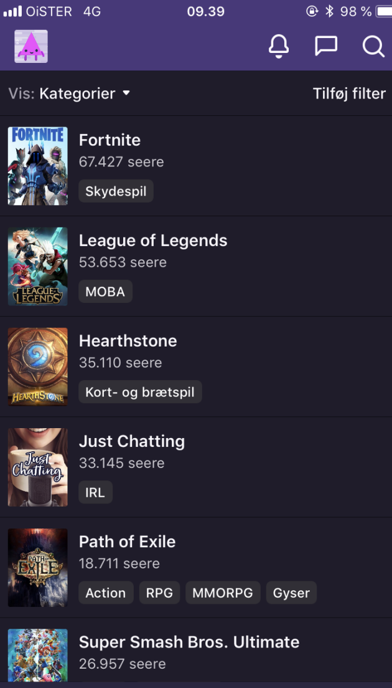

Kort beskrivelse
I dette tema her jeg lært om hvilke teorier, værktøjer og metoder man kan benytte til research, design, test og produktion af digitale løsninger. I de forskellige opgaver brugte jeg for eksempel tænkehøjt test til at finde ud af hvordan målgruppen navigere rundt i et site. Det var meget hjælpsomt og gav gode ideer til hvordan man kan forbedre sit site.
Jeg lærte at arbejde i grupper med design sprint der er fordelt på 5 dages intensivt arbejde.

Jeg lærte også hvordan man kan bruge adobe Xd til at lave en velfungerende prototype med, som man rent faktisk kan teste enden man overhoved begynder med at Kode. Dette gik op for mig designede (Kea Live) mobil appen, og fandt ud af at vores tænkehøjt test gjorde os opmærksomme på forbedringer.
Jeg lærte at se sammenhæng mellem brugernes behov og virksomhedens strategi, behov og mål i design.
